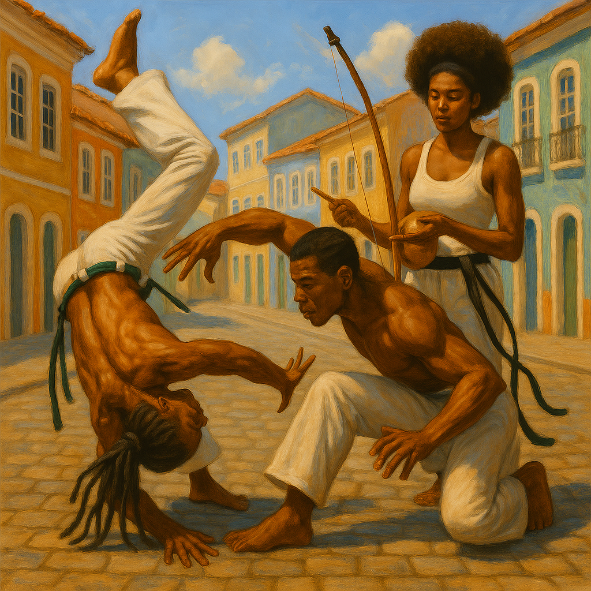
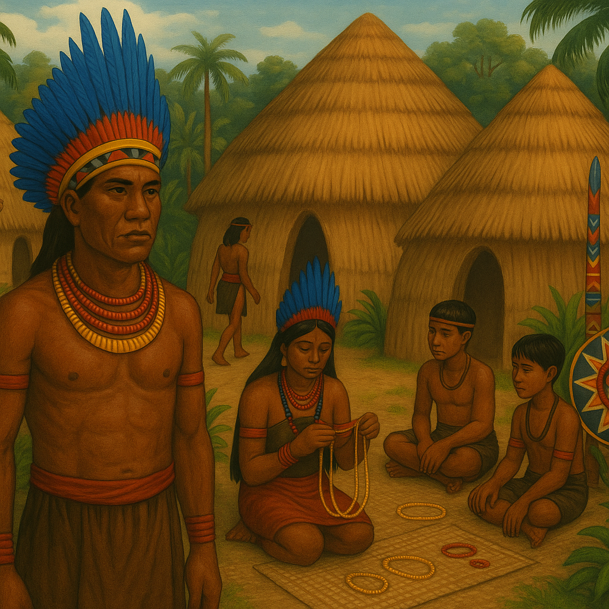
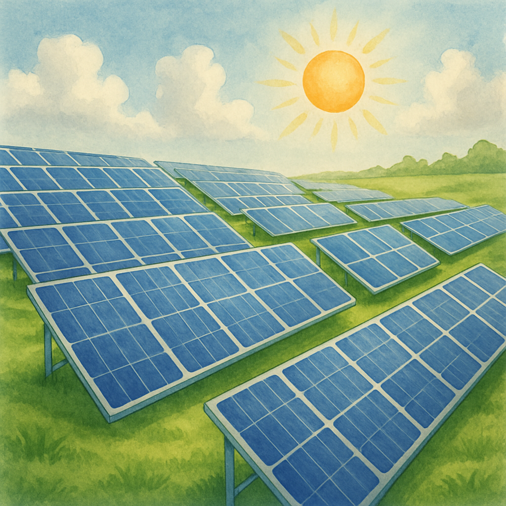
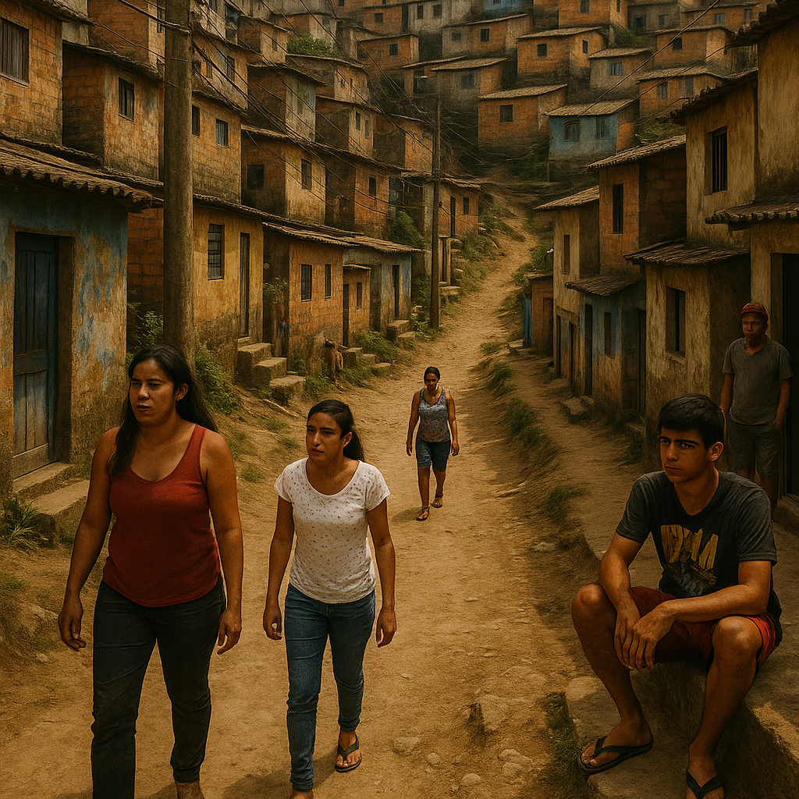
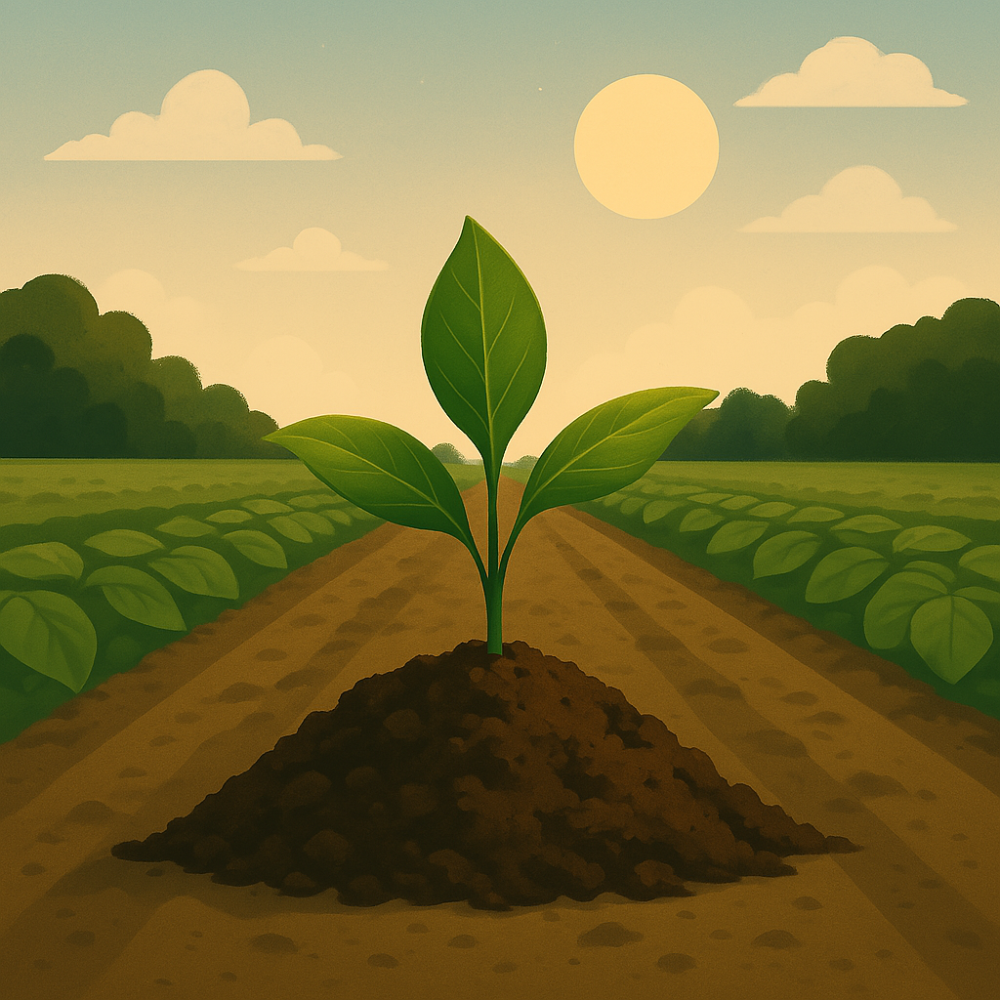

Devemos comemorar os cuidados com o meio ambiente, Agricultura e Cidade e a Sustentabilidade.
A importância da cultura e da sustentabilidade
Cultura e sustentabilidade andam juntas: a cultura preserva identidades e tradições, enquanto a sustentabilidade garante um futuro equilibrado e consciente.
A relação entre cultura e sustentabilidade é essencial para a construção de sociedades mais equilibradas e conscientes. A cultura reflete os valores, tradições e práticas de um povo, influenciando diretamente seu modo de viver e interagir com o meio ambiente. Quando integrada à sustentabilidade, ela pode incentivar hábitos responsáveis, como o consumo consciente, a preservação dos recursos naturais e o respeito à biodiversidade...
Expressões Culturais e Sustentáveis




